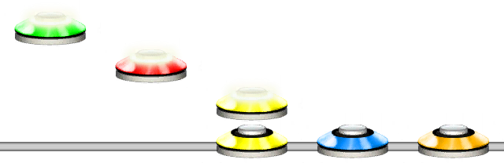

Chord
Aliases
CHORD, CH, 🎶
Overview
The Chord function will create a chord. Functionally, this works the exact same as encompassing something with square brackets [].
For a shorter way to write 5 fret chords, see the Shorthand Chord function.
Arguments
| Name | Type | Description |
|---|---|---|
| Pattern | string | The pattern to create a chord from. |
Example 1
CHORD(345)321
Will create a chord with the notes 3, 4, 5, followed by singular notes of 3, 2, 1
Square Brackets
The Chord function is the internal Unilang function for notes wrapped in square brackets [].
Example 2
[1234]135[2345]432[12]
An example showing usage of square brackets for chords instead of CHORD.
Functions Within Chords
As the Chord function is a function, other functions can be put inside of chords.
Example 3
[SW(1,5)]54321
Example showing function behaviour within chords. Namely the Sweep function from 1 to 5 within a chord.
Note Values Above 5
As with notes, chords also allow note values above 5.
Example 4
[1234567][345]
Example showing chords allowing values above 5.
Tip
In SideyBot, note values are capped at 50. To write a note with higher values than 9, use a-z or '10' numbers in single quotes '.
See more at Note
Note Properties
Chords can have note properties, just like normal notes. See Set Note Properties for more information.
Example 5
[12345]{16}
Setting note properties after a chord will set the properties of the entire chord.
Example 6
[123{16}45]
Setting note properties within a chord will set the properties of the accompanying fret.
Note
If a fret inside already has note properties, the external note properties will not override that fret.
Example 7
[123{16}45]{8}
Setting different note properties internally and externally.
Open Notes
Chords can have open notes as a fret, just like in Clone Hero.
Example 8
[024]12345
An example showing a chord with, Open, Red, Blue frets.
HOPO and Tap Chords
HOPO and Tap rules apply to chords just like they do in Clone Hero.
Example 9
[12][23][34][45]TAP([12][23][34][45])HOPO([12][23][34][45])
An example showing different types of chords.